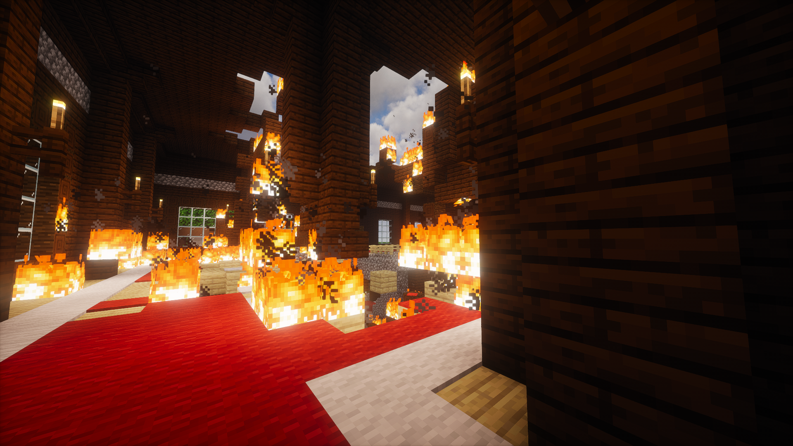
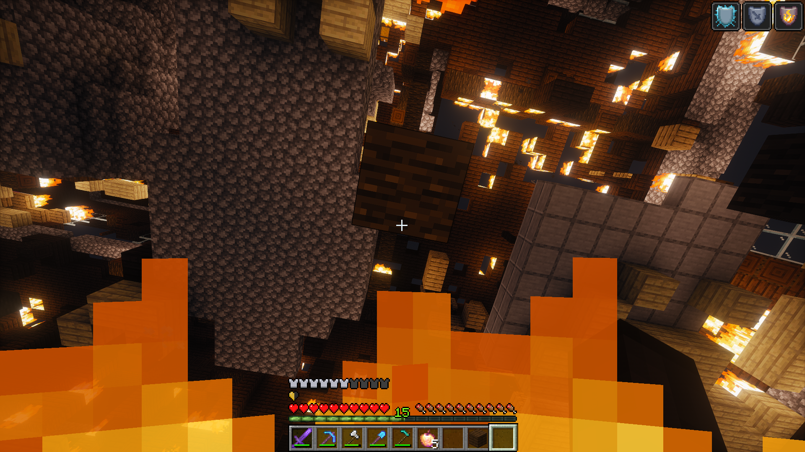
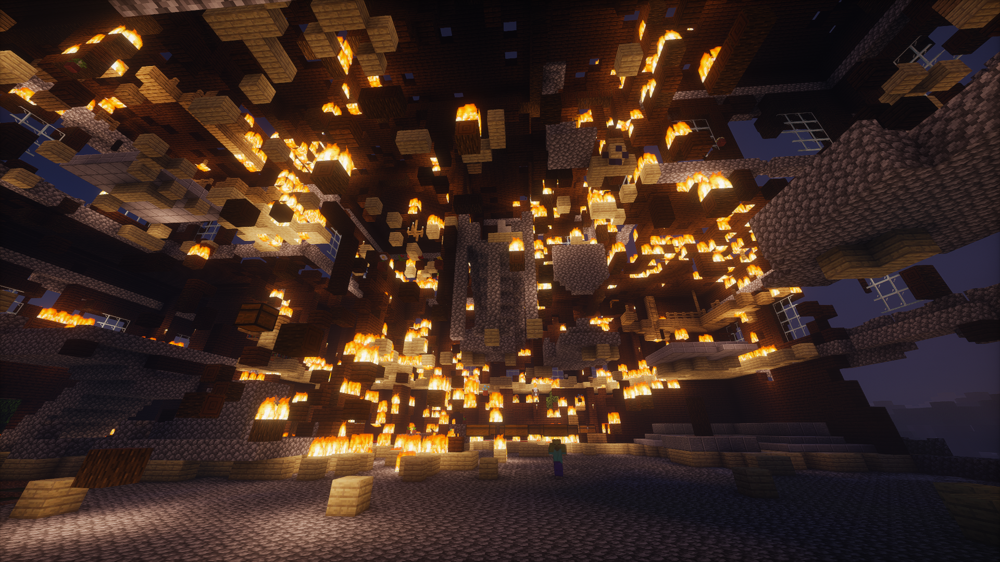
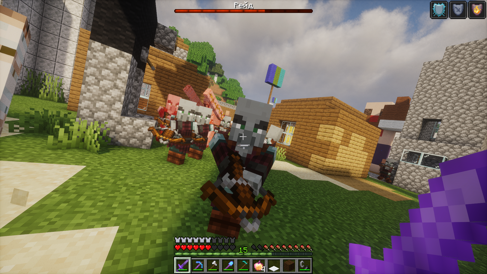
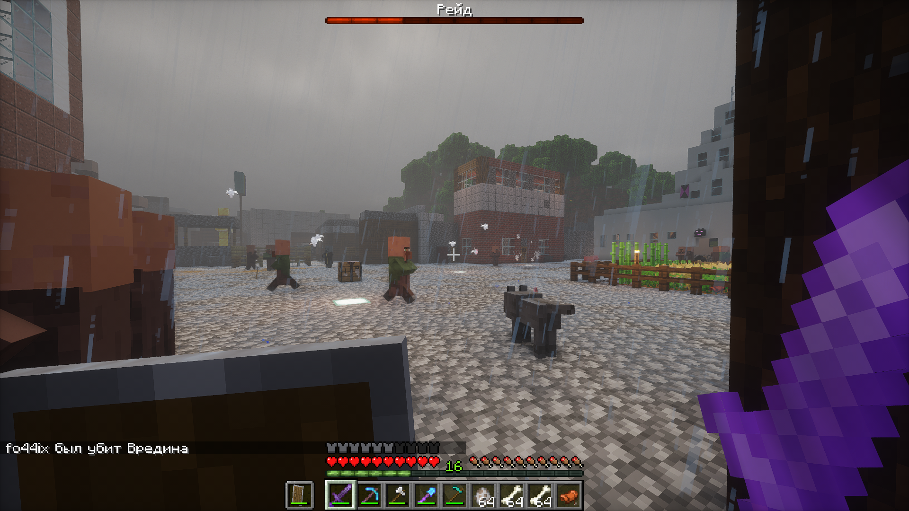
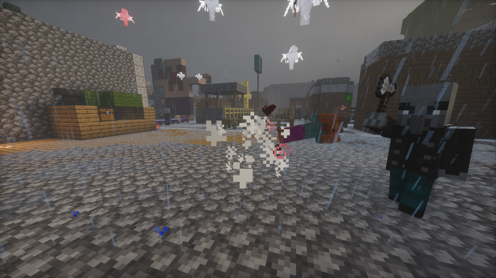
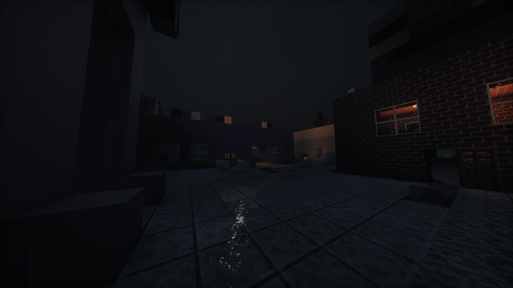
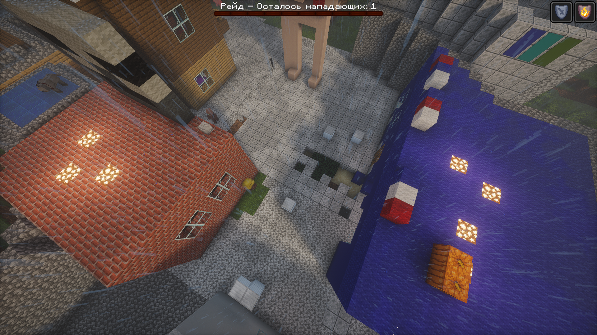
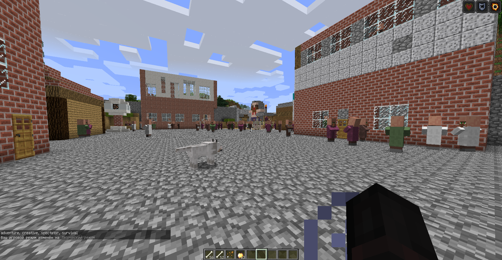

Кампания, начавшаяся как наступление на территории разбойников, неожиданно превратилась в оборону самой Эфритонии. После двух аванпостов и похода к особнякам противник напал на экспедицию. Главные сражения развернулись по всей стране, особенно у Белого дома и Южного поста.
§ 1. Начало кампании: два аванпоста
В 1270 году Эфритония начала военную кампанию, целью которой был захват территорий разбойников. В отличие от прежних экспедиций в другие измерения, на этот раз действия были направлены против укреплений, находившихся за пределами родной территории. Операция началась с двух аванпостов — важных точек разбойничьего присутствия.
Эфритонцы последовательно атаковали оба аванпоста и сумели разбить их. Этот успех стал первым этапом кампании и открыл путь к следующей цели — особнякам. Сохранившиеся фотографии показывают несколько ракурсов аванпостов и разные моменты операции. В хронике они образуют отдельную последовательность: сначала первый объект, затем второй и завершение этапа.
Победа у аванпостов создала ощущение, что кампания продолжится по намеченному плану. Однако дальнейшие события резко изменили характер операции. Вместо дальнейшего наступления за пределами страны эфритонцам вскоре пришлось возвращаться домой и защищать собственные города.


§ 2. Особняки и внезапное нападение
После аванпостов экспедиция направилась к особнякам разбойников. Этот этап должен был продолжить наступление на территории противника. Участники начали поджигать особняк — подобные поджоги стали заметной чертой похода. Но во время поджога обстановка неожиданно изменилась: на отряд напали.
Нападение стало поворотным моментом всей кампании. До этого эфритонцы действовали на территории противника и выбирали направление продвижения. Теперь инициатива перешла к нападавшим, а участникам пришлось срочно менять планы. Экспедиция была прервана, и отряд немедленно направился обратно в Эфритонию.
Фотографии особняков сохраняют память о последнем этапе наступательной части операции. В общей последовательности войны эти кадры стоят перед снимками главного сражения: они показывают, как кампания, начатая за пределами родины, приблизилась к событиям, развернувшимся уже внутри страны.





§ 3. Возвращение на родную землю
После нападения участники не стали продолжать операцию у особняков. Главной задачей стало возвращение в страну. Это решение изменило направление всей военной кампании: теперь речь шла уже не о продвижении к владениям разбойников, а о защите городов и жителей Эфритонии.
Угроза оказалась масштабной. По воспоминаниям создателей, на страну двинулись многочисленные разбойники, боевые свиньи и другие противники. Оборона затронула не один отдельный объект, а всю территорию государства. При этом наиболее тяжёлая борьба развернулась у двух важных точек — Белого дома и Южного поста.
Белый дом был главным правительственным зданием Эфритонии и одним из центральных символов государства. Южный пост имел особое значение для повседневной жизни страны: здесь располагались госпиталь, морг, полицейский участок и военкомат. Поэтому бои в этих местах угрожали не только строениям, но и самой системе общественной безопасности и управления.


§ 4. Великая битва за Эфритонию
Оборона стала самым кровопролитным событием в известной истории Эфритонии. Сражения проходили по всей стране, а не только возле одного здания. На защиту вышли эфритонцы и доступные государству защитники. В бою участвовали железные големы, собаки и собственные свиньи. Против них действовали многочисленные разбойники, боевые свиньи и другие враждебные существа.
В этой битве Эфритония понесла тяжёлые потери. Погибли железные големы, собаки, свиньи и многие жители; по рассказу создателей, пострадала практически вся община. Точное число погибших и полный список потерь не сохранились. Поэтому официальная версия летописи не приводит вымышленных цифр и оставляет статистику открытой до появления достоверных подсчётов.
Снимки войны показывают разные эпизоды обороны и последствия сражений. Они размещены внутри главы рядом с рассказом, чтобы не разрывать историю на отдельный текст и отдельный альбом. При просмотре фотографий читатель может проследить переход от первых кадров битвы к её тяжёлым последствиям.
Главное значение этой битвы заключается не в точном числе противников или продолжительности отдельных столкновений — таких данных пока нет. Она стала переломом в истории страны: война пришла непосредственно на родную территорию, затронула столицу, Южный пост, защитников, животных и население.



§ 5. Отступление разбойников и незавершённая угроза
В итоге разбойники отступили. Эфритония сохранилась как государство, однако исход войны нельзя считать окончательным устранением опасности. По сведениям создателей, противник может вернуться, поэтому угроза продолжает учитываться в современной истории страны.
Эта особенность отличает войну 1270 года от ранних экспедиций. Незерский и Эндский походы завершились возвращением с добычей и переходом к мирному развитию. Война с разбойниками закончилась отступлением противника, но оставила после себя необходимость восстановления, охраны и дальнейшего внимания к безопасности регионов.
Память о защитниках получила продолжение в памятниках и мемориальных объектах Эфритонии. В стране есть памятник голему и памятники собакам. Они сохраняют память о тех, кто сопровождал государство в тяжёлые периоды. Другие памятники и мемориалы описываются в отдельном разделе наследия.
§ 6. Восстановление и освещение регионов
После битвы началось восстановление. По сведениям создателей, на возвращение к обычной жизни ушло несколько игровых дней. Восстанавливались жители и дома, приводились в порядок жилые участки и повседневные сооружения. Это был важный этап: после тяжёлых потерь государству нужно было вновь сделать территорию пригодной для спокойной жизни.
Особое внимание уделили освещению регионов. Освещение стало не просто декоративным улучшением, а частью общей работы по повышению безопасности. Освещённые улицы и территории легче контролировать, а в условиях Minecraft свет помогает уменьшить риск появления враждебных существ в тёмных местах.
Фотографии восстановления показывают контраст с кадрами войны. После снимков аванпостов, особняков и сражений читатель видит дома и мирную застройку. Именно этот переход — от военного кризиса к восстановлению — завершает главу о войне 1270 года.



Главное о войне 1270 года
- Целью кампании был захват территорий разбойников.
- В начале операции были разбиты два аванпоста.
- Во время поджога особняка на экспедицию напали; отряд немедленно вернулся в Эфритонию.
- Бои прошли по всей стране, особенно у Белого дома и Южного поста.
- Погибли големы, собаки, свиньи и многие жители; точное число потерь неизвестно.
- Разбойники отступили, однако угроза возвращения сохранилась.
- В течение нескольких игровых дней началось восстановление домов и освещение регионов.
Война 1270 года считается самой кровопролитной битвой в известной истории Эфритонии.